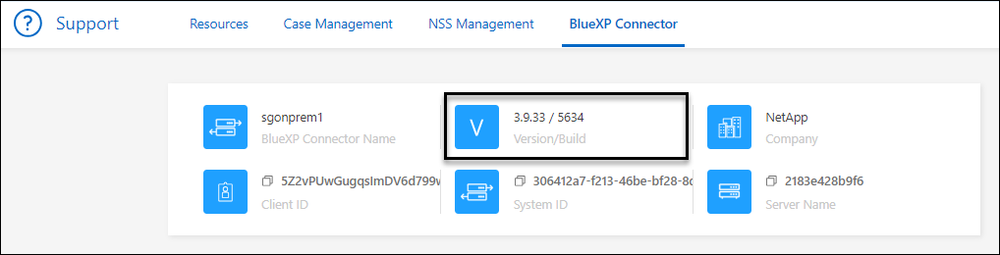

Versionshinweise
Versionshinweise
Verwalten Sie vorhandene Anschlüsse
 Änderungen vorschlagen
Änderungen vorschlagen
Nachdem Sie einen Connector erstellt haben, müssen Sie ihn möglicherweise ab und zu verwalten. Sie können beispielsweise zwischen den Anschlüssen wechseln, wenn Sie über mehrere verfügen. Oder Sie müssen den Connector möglicherweise manuell aktualisieren, wenn Sie BlueXP im privaten Modus verwenden.

|
Der Connector enthält eine lokale Benutzeroberfläche, auf die über den Connector-Host zugegriffen werden kann. Diese UI steht Kunden zur Verfügung, die BlueXP im eingeschränkten Modus oder im privaten Modus verwenden. Wenn Sie BlueXP im Standardmodus verwenden, sollten Sie über die auf die Benutzeroberfläche zugreifen "BlueXP SaaS-Konsole" |
Betriebssystem- und VM-Wartung
Die Wartung des Betriebssystems auf dem Connector-Host liegt in Ihrer Verantwortung. Sie sollten beispielsweise Sicherheitsupdates auf dem Betriebssystem auf dem Connector-Host anwenden, indem Sie die Standardverfahren Ihres Unternehmens für die Betriebssystemverteilung befolgen.
Beachten Sie, dass Sie keine Dienste auf dem Connector-Host anhalten müssen, wenn Sie ein Betriebssystem-Update ausführen.
Wenn Sie die Connector VM anhalten und dann starten müssen, sollten Sie dies über die Konsole Ihres Cloud-Providers oder mithilfe der Standardverfahren für das On-Premises-Management tun.
VM oder Instanztyp
Wenn Sie einen Connector direkt aus BlueXP erstellt haben, hat BlueXP eine Virtual Machine-Instanz in Ihrem Cloud-Provider implementiert, die eine Standardkonfiguration verwendet. Nachdem Sie den Connector erstellt haben, sollten Sie nicht zu einer kleineren VM-Instanz wechseln, die weniger CPU oder RAM hat.
Die CPU- und RAM-Anforderungen lauten wie folgt:
- CPU
-
4 Kerne oder 4 vCPUs
- RAM
-
14 GB
Anzeigen der Version eines Connectors
Sie können die Version Ihres Connectors anzeigen, um zu überprüfen, ob der Connector automatisch auf die neueste Version aktualisiert wurde, oder weil Sie ihn mit Ihrem NetApp-Vertreter teilen müssen.
-
Wählen Sie oben rechts in der BlueXP Konsole das Hilfesymbol aus.
-
Wählen Sie Support > BlueXP Connector.
Die Version wird oben auf der Seite angezeigt.

Zwischen den Anschlüssen wechseln
Wenn Sie über mehrere Anschlüsse verfügen, können Sie zwischen diesen wechseln, um die Arbeitsumgebungen zu sehen, die mit einem bestimmten Konnektor verknüpft sind.
Nehmen wir zum Beispiel an, dass Sie in einer Multi-Cloud-Umgebung arbeiten. Möglicherweise verfügen Sie über einen Connector in AWS und einen anderen in Google Cloud. Zum Managen der Cloud Volumes ONTAP Systeme, die in diesen Clouds ausgeführt werden, müsste zwischen diesen Anschlüssen gewechselt werden.
-
Wählen Sie die Dropdown-Liste Connector aus, wählen Sie einen anderen Konnektor aus und wählen Sie dann Switch aus.

BlueXP aktualisiert und zeigt die Arbeitsumgebungen, die mit dem ausgewählten Connector verknüpft sind.
Laden Sie eine AutoSupport Nachricht herunter oder senden Sie sie
Wenn Sie Probleme haben, werden Sie möglicherweise von den Mitarbeitern von NetApp gebeten, zur Fehlerbehebung eine AutoSupport Nachricht an den NetApp Support zu senden.
-
Klicken Sie oben rechts auf der BlueXP Konsole auf das Hilfesymbol und wählen Sie Support aus.

-
Wählen Sie BlueXP Connector aus.
-
Je nachdem, wie Sie die Informationen an den NetApp Support senden, wählen Sie eine der folgenden Optionen:
-
Wählen Sie die Option, um die AutoSupport-Nachricht auf Ihren lokalen Computer herunterzuladen. Sie können es dann auf bevorzugte Art und Weise an den NetApp Support senden.
-
Wählen Sie AutoSupport senden, um die Nachricht direkt an den NetApp Support zu senden.

-
Stellen Sie eine Verbindung zur Linux VM her
Wenn Sie eine Verbindung zur Linux-VM herstellen möchten, auf der der Connector ausgeführt wird, können Sie dies über die Verbindungsoptionen Ihres Cloud-Providers tun.
- AWS
-
Als Sie die Connector-Instanz in AWS erstellt haben, haben Sie einen AWS-Zugriffsschlüssel und einen geheimen Schlüssel angegeben. Sie können dieses Schlüsselpaar für SSH zur Instanz verwenden. Der Benutzername für die EC2 Linux-Instanz ist ubuntu (für Connectors, die vor Mai 2023 erstellt wurden, war der Benutzername ec2-user).
- Azure
-
Beim Erstellen der Connector-VM in Azure haben Sie einen Benutzernamen angegeben und sich für die Authentifizierung mit einem Kennwort oder einem öffentlichen SSH-Schlüssel entschieden. Verwenden Sie die Authentifizierungsmethode, die Sie für die Verbindung zur VM ausgewählt haben.
- Google Cloud
-
Sie können keine Authentifizierungsmethode angeben, wenn Sie einen Connector in Google Cloud erstellen. Sie können eine Verbindung zur Linux VM-Instanz jedoch über die Google Cloud Console oder Google Cloud CLI (gcloudd) herstellen.
Erfordern die Verwendung von IMDSv2 auf Amazon EC2 Instanzen
Ab März 2024 unterstützt BlueXP jetzt den Amazon EC2 Instance Metadata Service Version 2 (IMDSv2) mit dem Connector und Cloud Volumes ONTAP (einschließlich des Mediators für HA-Implementierungen). IMDSv2 bietet einen verbesserten Schutz vor Schwachstellen. "Weitere Informationen zu IMDSv2 finden Sie im AWS Security Blog"
-
IMDSv2 ist standardmäßig auf allen neuen Connector EC2-Instanzen aktiviert. IMDSv1 wurde vor März 2024 aktiviert.
-
IMDSv1 ist standardmäßig auf allen neuen und bestehenden Cloud Volumes ONTAP EC2 Instanzen aktiviert.
Falls von Ihren Sicherheitsrichtlinien gefordert, können Sie Ihre EC2-Instanzen für die Verwendung von IMDSv2 konfigurieren.
-
Die Connector-Version muss 3.9.38 oder höher sein.
-
Diese Änderung erfordert einen Neustart der Cloud Volumes ONTAP-Instanzen.
Für diese Schritte ist die Verwendung der AWS CLI erforderlich, da Sie das Limit für den Response-Hop auf 3 ändern müssen.
-
Erfordern die Verwendung von IMDSv2 auf der Connector-Instanz:
-
Stellen Sie eine Verbindung zur Linux-VM für den Connector her.
Als Sie die Connector-Instanz in AWS erstellt haben, haben Sie einen AWS-Zugriffsschlüssel und einen geheimen Schlüssel angegeben. Sie können dieses Schlüsselpaar für SSH zur Instanz verwenden. Der Benutzername für die EC2 Linux-Instanz ist ubuntu (für Connectors, die vor Mai 2023 erstellt wurden, war der Benutzername ec2-user).
-
Installieren Sie die AWS CLI.
-
Verwenden Sie die
aws ec2 modify-instance-metadata-optionsBefehl, um die Verwendung von IMDSv2 zu erfordern und das PUT Response Hop Limit auf 3 zu ändern.Beispiel
aws ec2 modify-instance-metadata-options \ --instance-id <instance-id> \ --http-put-response-hop-limit 3 \ --http-tokens required \ --http-endpoint enabled
Der http-tokensParameter setzt IMDSv2 auf erforderlich. Wennhttp-tokensIst erforderlich, müssen Sie auch festlegenhttp-endpointAuf aktiviert. -
-
Erfordern die Verwendung von IMDSv2 auf Cloud Volumes ONTAP Instanzen:
-
Wechseln Sie zum "Amazon EC2 Konsole"
-
Wählen Sie im Navigationsbereich instances aus.
-
Wählen Sie eine Cloud Volumes ONTAP-Instanz aus.
-
Wählen Sie Aktionen > Instanzeinstellungen > Optionen für Instanzmetadaten ändern.
-
Wählen Sie im Dialogfeld Modify Instance Metadata options Folgendes aus:
-
Wählen Sie für Instance Metadata Service enable aus.
-
Wählen Sie für IMDSv2 required aus.
-
Wählen Sie Speichern.
-
-
Wiederholen Sie diese Schritte für andere Cloud Volumes ONTAP Instanzen, einschließlich des HA Mediators.
-
Die Connector-Instanz und die Cloud Volumes ONTAP-Instanzen sind jetzt so konfiguriert, dass sie IMDSv2 verwenden.
Aktualisieren Sie den Connector, wenn Sie den privaten Modus verwenden
Wenn Sie BlueXP im privaten Modus nutzen, können Sie den Connector aktualisieren, wenn eine neuere Version von der NetApp Support Site verfügbar ist.
Der Connector muss während des Upgrade-Vorgangs neu gestartet werden, damit die webbasierte Konsole während des Upgrades nicht verfügbar ist.
|
|
Wenn Sie BlueXP im Standardmodus oder im eingeschränkten Modus verwenden, aktualisiert der Connector seine Software automatisch auf die neueste Version, sofern er über ausgehenden Internetzugang verfügt, um das Softwareupdate zu erhalten. |
-
Laden Sie die Connector-Software von der herunter "NetApp Support Website".
Stellen Sie sicher, dass Sie das Offline-Installationsprogramm für private Netzwerke ohne Internetzugang herunterladen.
-
Kopieren Sie das Installationsprogramm auf den Linux-Host.
-
Weisen Sie Berechtigungen zum Ausführen des Skripts zu.
chmod +x /path/BlueXP-Connector-offline-<version>Wobei <version> die Version des Connectors ist, den Sie heruntergeladen haben.
-
Führen Sie das Installationsskript aus:
sudo /path/BlueXP-Connector-offline-<version>Wobei <version> die Version des Connectors ist, den Sie heruntergeladen haben.
-
Nachdem die Aktualisierung abgeschlossen ist, können Sie die Version des Connectors überprüfen, indem Sie Hilfe > Support > Connector aufrufen.
Ändern Sie die IP-Adresse für einen Konnektor
Wenn es für Ihr Unternehmen erforderlich ist, können Sie die interne IP-Adresse und die öffentliche IP-Adresse der Connector-Instanz ändern, die automatisch von Ihrem Cloud-Provider zugewiesen wird.
-
Befolgen Sie die Anweisungen Ihres Cloud-Providers, um die lokale IP-Adresse oder die öffentliche IP-Adresse (oder beide) für die Connector-Instanz zu ändern.
-
Wenn Sie die öffentliche IP-Adresse geändert haben und eine Verbindung zur lokalen Benutzeroberfläche auf dem Connector herstellen müssen, starten Sie die Connector-Instanz neu, um die neue IP-Adresse bei BlueXP zu registrieren.
-
Wenn Sie die private IP-Adresse geändert haben, aktualisieren Sie den Backup-Speicherort für Cloud Volumes ONTAP-Konfigurationsdateien, so dass die Backups an die neue private IP-Adresse des Connectors gesendet werden.
Sie müssen den Backup-Speicherort für jedes Cloud Volumes ONTAP-System aktualisieren.
-
Führen Sie den folgenden Befehl über die Cloud Volumes ONTAP-CLI aus, um das aktuelle Backup-Ziel anzuzeigen:
system configuration backup show -
Führen Sie den folgenden Befehl aus, um die IP-Adresse für das Backup-Ziel zu aktualisieren:
system configuration backup settings modify -destination <target-location>
-
Bearbeiten Sie die URIs eines Connectors
Fügen Sie den Uniform Resource Identifier (URI) für einen Connector hinzu und entfernen Sie ihn.
-
Wählen Sie im BlueXP Header das Dropdown-Menü Connector aus.
-
Wählen Sie Connectors Verwalten.
-
Wählen Sie das Aktionsmenü für einen Konnektor aus und wählen Sie URIs bearbeiten.
-
Fügen Sie URIs hinzu und entfernen Sie sie, und wählen Sie dann Apply.
Beheben Sie Download-Fehler bei Verwendung eines Google Cloud NAT-Gateways
Der Connector lädt automatisch Software-Updates für Cloud Volumes ONTAP herunter. Der Download kann fehlschlagen, wenn Ihre Konfiguration ein Google Cloud NAT Gateway verwendet. Sie können dieses Problem beheben, indem Sie die Anzahl der Teile begrenzen, in die das Software-Image unterteilt ist. Dieser Schritt muss mithilfe der BlueXP API abgeschlossen werden.
-
SENDEN SIE EINE PUT-Anforderung an /occm/config mit dem folgenden JSON als Text:
{ "maxDownloadSessions": 32 }Der Wert für maxDownloadSessions kann 1 oder eine beliebige Ganzzahl größer als 1 sein. Wenn der Wert 1 ist, wird das heruntergeladene Bild nicht geteilt.
Beachten Sie, dass 32 ein Beispielwert ist. Der Wert, den Sie verwenden sollten, hängt von Ihrer NAT-Konfiguration und der Anzahl der Sitzungen ab, die Sie gleichzeitig haben können.
Entfernen Sie die Anschlüsse von BlueXP
Wenn ein Connector inaktiv ist, können Sie ihn aus der Liste der Anschlüsse in BlueXP entfernen. Sie können dies tun, wenn Sie die virtuelle Connector-Maschine gelöscht oder die Connector-Software deinstalliert haben.
Beachten Sie Folgendes zum Entfernen eines Konnektors:
-
Durch diese Aktion wird die virtuelle Maschine nicht gelöscht.
-
Diese Aktion kann nicht rückgängig gemacht werden - sobald Sie einen Connector aus BlueXP entfernen, können Sie ihn nicht wieder hinzufügen.
-
Wählen Sie im BlueXP Header das Dropdown-Menü Connector aus.
-
Wählen Sie Connectors Verwalten.
-
Wählen Sie das Aktionsmenü für einen inaktiven Konnektor aus und wählen Sie Connector entfernen.

-
Geben Sie den Namen des zu bestätigten Connectors ein, und wählen Sie dann Entfernen.
BlueXP entfernt den Connector aus seinen Datensätzen.
Deinstallieren Sie die Connector-Software
Deinstallieren Sie die Connector-Software, um Probleme zu beheben oder die Software dauerhaft vom Host zu entfernen. Die Schritte, die Sie verwenden müssen, hängen davon ab, ob Sie den Connector auf einem Host mit Internetzugang (Standardmodus oder eingeschränkter Modus) oder auf einem Host in einem Netzwerk ohne Internetzugang (privater Modus) installiert haben.
Deinstallieren, wenn Sie den Standardmodus oder den eingeschränkten Modus verwenden
Mit den folgenden Schritten können Sie die Connector-Software deinstallieren, wenn Sie BlueXP im Standardmodus oder im eingeschränkten Modus verwenden.
-
Stellen Sie eine Verbindung zur Linux-VM für den Connector her.
-
Führen Sie auf dem Linux-Host das Deinstallationsskript aus:
/opt/application/netapp/service-manager-2/uninstall.sh [silent]Silent führt das Skript aus, ohne dass Sie zur Bestätigung aufgefordert werden.
Deinstallieren Sie die Software, wenn Sie den privaten Modus verwenden
Mit den folgenden Schritten können Sie die Connector-Software deinstallieren, wenn Sie BlueXP im privaten Modus verwenden, auf den kein Internetzugang verfügbar ist.
-
Stellen Sie eine Verbindung zur Linux-VM für den Connector her.
-
Führen Sie auf dem Linux-Host die folgenden Befehle aus:
./opt/application/netapp/ds/cleanup.sh
rm -rf /opt/application/netapp/ds